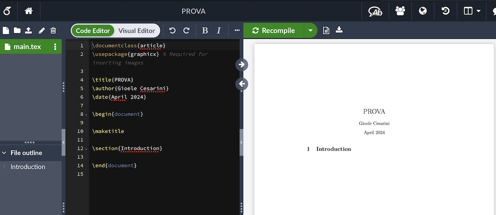
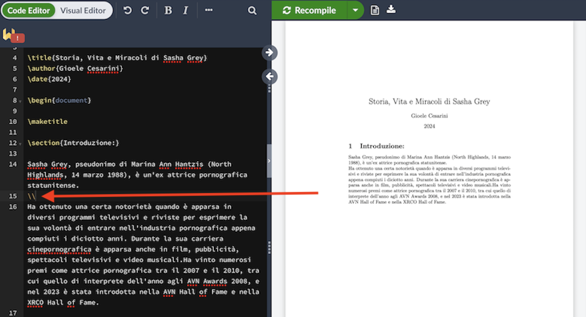

LateX per Umanisti
Premessa:
Questo primo articolo è per chi vuole scrivere la propria tesi, non vuole farlo con Word e non ha idea di cosa sia LateX. In particolare è per coloro che studiano materie umanistiche, la parte scientifica di LateX verrà approfondita in un altro articolo più specifico.
Introduzione
Immagino dunque che tu sia alle prese con la stesura della tesi, mi sembra di vederti, tutto sudato, mentre cerchi di completare la bibliografia senza che tutto il testo collassi su stesso. Vuoi smettere di bestemmiare contro gli elenchi puntati?
E' il momento di introdurti al magico mondo di LateX...
Cos'è sta roba quindi e dove la trovo?
Torna all'IndiceLateX è un markup (ovvero un linguaggio di marcatura, molto più semplice di un linguaggio di programmazione) che ti permette di scrivere testi ordinati ed esteticamente gradevoli con il minimo sforzo.
Per iniziare ad utilizzare LateX basta andare sul sito Overleaf (uno dei tanti, probabilmente il più usato), iscriversi gratuitamente e creare un nuovo file vuoto.
I Primi Comandi:
Torna all'IndiceLateX ha la caratteristica principale di permetterti di scrivere direttamente il codice (Code Editor). Normalmente su Word scrivi su quello che è chiamato Visual Editor che per la vita di tutti i giorni va benissimo ma per i lavori più grossi, un libro o la tesi, LateX è sicuramente la scelta migliore. Richiede un piccolo sforzo in più ma è uno strumento molto più potente, ottimo per gestire questo tipo di file.
Apri dunque il tuo primo file di prova, ti ritrovi davanti alla seguente schermata:
A sinistra hai lo spazio per scrivere il codice mentre sulla destra schiacciando il tasto "Recompile" hai il risultato del codice concretizzato nel tuo agognato file pdf.
Per tutti coloro che non hanno mai programmato non dovete spaventarvi. Cercherò ora di riassumervi il senso dello scrivere in questo strano modo. Dovete immaginare che il computer legga quello che scrivete a sinistra e lo reinterpreti a destra a seconda dei comandi che avete scritto. Il computer è molto schematico nel suo ragionamento e dunque la stesura del testo richiede un minimo di attenzione in più di quella solita, ma ne vale decisamente la pena.
Appena apri il tuo primo file vuoto in esso sono già scritti alcuni comandi. Quelli in arancione sono i pacchetti da dover aggiungere al file per utilizzare per alcune funzioni speciali. Mentre in giallo ci sono i comandi, ognuno dei quali generalmente è dichiarato con "\" (backslash). Per ora non guardiamo i comandi arancioni, vedremo più avanti alcune migliorie che si posso fare.
Concentriamoci sui comandi gialli, prima di tutto, il più importante di tutti:
\begin {document}
\end {document}
Come già puoi vedere il comando va aperto e chiuso, lo apri dove il documento inizia e lo chiudi dove questo finisce, ogni cosa scritta qui dentro apparirà del documento.
I primi 3 comandi: \title{}, \author{} e \date{} come si può intuire dal nome, indicano il titolo, l'autore e la data che vanno scritti subito dopo tra graffe. Come vedi automaticamente il compilatore interpreta questi comandi e scrive senza nessuna fatica da parte tua titolo autore e data in maniera gradevole.
Vediamo ora il comando \section{}, questo comando fa parte di una famiglia di comandi che ti interesserà molto, indica il titolo di un capitolo (che va inserito tra graffe). Sotto a questo comando il compilatore capisce automaticamente che tu inserirai del testo, facciamo un esempio:
Esempio:
Torna all'IndiceSupponiamo io voglia scrivere la mia tesi, allora sostituirò il titolo di prova con quello della tesi e andrò a scrivere un'introduzione:
Da notare il fatto evidenziato con la frecca rossa, il compilatore va a capo in automatico preservando la grafifca del documento, se volete andare a campo manualmente dovete farlo inserendo "//"
Perfetto! Abbiamo scritto titolo e la prima section, e ora? Facile: inserendo una nuova "\section{}" il compilatore riconoscerà automaticamente che è il capitolo "2" della tua tesi a cui potete ovviamente dare il nome che volte come al capitolo uno d'altronde. Per tutti i sotto capitoli esiste un altro comando "\subsection{}", per il sotto capitolo del sotto capito "subsubsection{}", molto intuitivo no?
Una Piccola Nota:
Per tutti i caretteri speciali va inserito il backslash prima, se vogliamo per esempio scrivere il cancelletto, dovremo scrivere: "\#", il carattere si evidenziarà di arancione e compilando il codice vedremo che verrà tradotto nella maniera che volevamo.
Come Fare un Elenco Puntato:
Torna all'IndicePer fare un elenco puntato è piuttosto semplice, bastano alcune righe di codice e al contrario degli elenchi in Word ,questi non si rovineranno ogni volta che modificate il documento. Vediamo subito cosa dovete inserire:
\begin {itemize}
\item ...
\item ...
\end {itemize}
Al posto dei puntini chiaramente voi potete inserire il vostro elenco, per ogni elemento dell'elenco inserite il comando "\item", questo differenzierà automaticamente gli elementi dell'elenco
Potete fare anche un elenco numerato o altri mille tipi che potete facilmente trovare online (grande risorsa per scrivere in LateX), per esempio per scrivere un elenco numerato dovete inserire:
\begin {enumerate}
\item ...
\item ...
\end {enumerate}
Come Inserire delle Immagini:
Torna all'IndiceUn'altra cosa importante per i vostri docuementi è l'inserimento delle immagini. Purtroppo in LateX, per un neofito, può essere un po' complesso, questo perchè l'unico modo per agire sul posizionamento delle immagini e sulla loro grandezza è utilizzare il code-editor, non potrete quindi spostare o ingrandire l'immagine con il mouse. Nonostante ciò, presa un po' la mano, sarà più facile di quello che sembra inizialmente, vediamo subito il codice e poi commentiamolo:
\begin {figure}[ht]
\centering
\includegraphics[scale=...] {figure.png }
\end {figure}
Il comando \centering serve per centrare l'immagine nella pagina, ovviamente non è necessario se non volete che sia centrato. Invece [scale=...] riscala la dimensione dell'immagine, generalmente vanno rimpicciolite. Il riscalamento ragione in percentuale dunque se mettet [scale=0.5] avrete l'immagine rimpicciolita del 50%, se mettete [scale=1.5], ingrandirete l'immagine del 150%. E' a vostra discrezione la dimensione ovviamente.
Nel caso specifico del codice che ho scritto io stiamo inserendo l'immagine figure.png, ma da dove la prende LateX?
Tutto quello che dovete fare è schiacciare in alto a sinistra il tasto upload ed inserire l'immagine figure.png. Una volta inserito il codice allora comparirà la vostra immagine.
Una piccola nota lo merita il comando [ht], inserendolo obbligate LateX ad inserire l'imagine proprio tra il testo subito prima ed il testo subito dopo, questo non è scontato, perchè cercherà di adattare l'immagine alla pagina. Potete cercare su Internet altri comandi se siete interessati.
Il Famigerato e Tanto Odiato Indice:
Torna all'IndiceAndiamo ora a vedere una delle funzioni più interessanti e comode di LateX, l'indice.
Vi inseriesco subito di seguito il codice da mettere nella parte dei pacchetti:
\usepackage {hyperref}
\usepackage {italian} {babel}
E quello poi da inserire dopo \maketitle:
\tableofcontents
Il \tableofcontents è la parte fondamentale, già solo il suo inserimento crea autumaticamente un indice all'inizio del pdf, prima della prima section. I pacchetti che ho scritto servono a rendere l'indice cliccabile, in modo tale che cliccando un titolo questo vi porti immediatamente a quella pagina (hyperref), mentre l'altro pacchetto serve per titolare l'indice in italiano e non in inglese, se non mettete questo pacchetto il titolo dell'indice sarà semplicemente: Contents.
Se volete che l'indice appaia in prima pagina da solo, potete inserire il comando \newpage dopo il comadno \tableofcontents.
La Bibliografia:
Torna all'IndicePer fare la bibliografia devi creare un nuovo file, in alto a sinistra trovi le impostazioni. Devi creare un file con estensione .bib, che chiameremo imparalatex.bib
Quello che avete appena creato è un database bibliografico, per ora vuoto. Al suo interno potete mettere una o più voci che poi andrete a citare tramite il comando \cite{nomefonte}. Come si fa a riempire il database?
Cercando su internet potete trovare molti esempi di tipi di fonte, vediamone qui due, forse i più utili, gli articoli e i libri:
@article{etichetta1,
author={Cesarini, G.}, title={Cascate di Fanta},
year={1999}
}
@book{etichetta2,
author={Ugazio, G. and Boero, A.}, title={Pedagogia Teoretica},
year={1969},
publisher={Mondatroia}
}
Tornando ora invece a scrivere nel main.tex, vi aggiungo prima di tutto i pacchetti che dovete aggiungere:
\usepackage[style=authoryear] {biblatex}
\usepackage{csquotes}
\addbibresourceimparalatex.bib
Infine dovrete aggiungere, per far sì che la bibliografia venga stampata a schermo, il seguente comando subito prima del \end{document}:
\printbibliography
Conclusione:
Torna all'IndicePerfetto! Ora dovresti avere tutti gli strumenti necessari per iniziare a scrivere la tua tesi in LateX, uno strumento importantissimo è internet, puoi trovare decine, centinaia di forum e video per qualsivoglia comando abbiate in mente, vi invito a sperimentare e ricercare.
Link Utili:
Torna all'IndiceTi metto qui di seguito un elenco di link utili per il tuo studio personale: